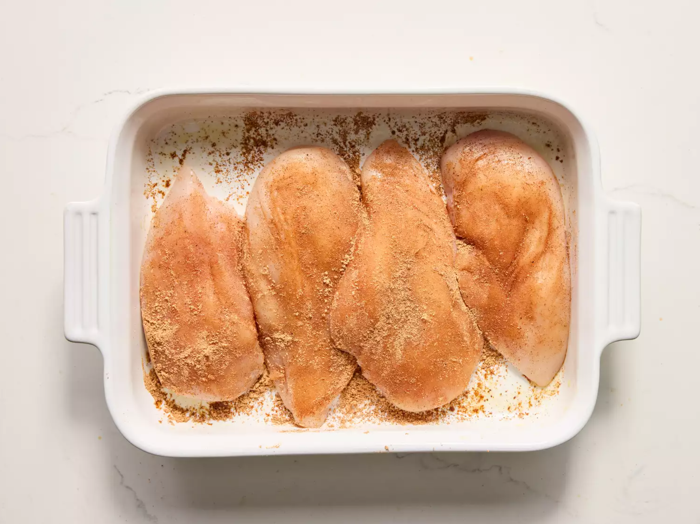

Salsa Chicken

The go-to recipe for the most delicious cookie you've ever had.
Ingredients
- 4 skinless, boneless chicken breast halves
- 4 teaspoons taco seasoning mix
- 1 cup salsa
- 1 cup shredded cheddar cheese
- 2 tablespoons sour cream(optional)
Directions
- Gather all ingredients. Preheat the oven to 375 degrees F (190 degrees C). Lightly grease a 9x13-inch baking dish.
- Place chicken breasts in the prepared dish. Sprinkle seasoning mix on both sides of chicken breasts.

- Pour salsa on top.
- Bake in the preheated oven until chicken is tender and juicy and the juices run clear, 25 to 35 minutes.
- Sprinkle chicken evenly with cheese.
- Continue baking until cheese is melted and bubbly, 3 to 5 minutes more.
- Top with sour cream and serve.

Home